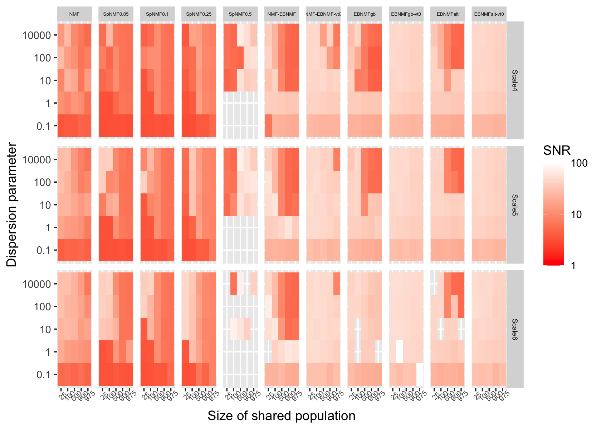
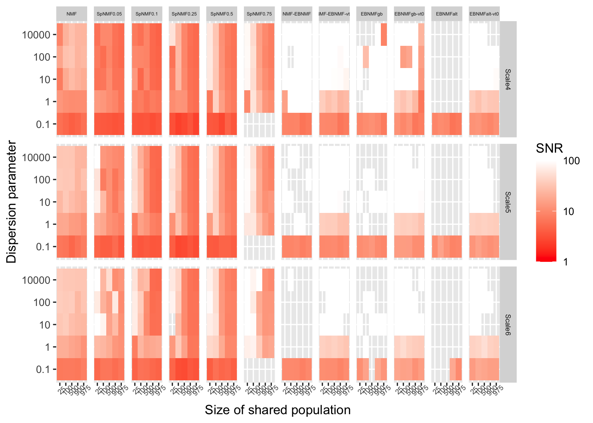

NMF analyses of simulated data, Scenario 2
Jason Willwerscheid and Peter Carbonetto
Last updated: 2025-08-22
Checks: 6 1
Knit directory: ebnmf-paper/
This reproducible R Markdown analysis was created with workflowr (version 1.7.1). The Checks tab describes the reproducibility checks that were applied when the results were created. The Past versions tab lists the development history.
Great! Since the R Markdown file has been committed to the Git repository, you know the exact version of the code that produced these results.
Great job! The global environment was empty. Objects defined in the global environment can affect the analysis in your R Markdown file in unknown ways. For reproduciblity it’s best to always run the code in an empty environment.
The command set.seed(20231214) was run prior to running
the code in the R Markdown file. Setting a seed ensures that any results
that rely on randomness, e.g. subsampling or permutations, are
reproducible.
Great job! Recording the operating system, R version, and package versions is critical for reproducibility.
- unnamed-chunk-10
- unnamed-chunk-2
- unnamed-chunk-4
- unnamed-chunk-5
To ensure reproducibility of the results, delete the cache directory
sim_scenario2_cache and re-run the analysis. To have
workflowr automatically delete the cache directory prior to building the
file, set delete_cache = TRUE when running
wflow_build() or wflow_publish().
Great job! Using relative paths to the files within your workflowr project makes it easier to run your code on other machines.
Great! You are using Git for version control. Tracking code development and connecting the code version to the results is critical for reproducibility.
The results in this page were generated with repository version 6768bba. See the Past versions tab to see a history of the changes made to the R Markdown and HTML files.
Note that you need to be careful to ensure that all relevant files for
the analysis have been committed to Git prior to generating the results
(you can use wflow_publish or
wflow_git_commit). workflowr only checks the R Markdown
file, but you know if there are other scripts or data files that it
depends on. Below is the status of the Git repository when the results
were generated:
Ignored files:
Ignored: .DS_Store
Ignored: .Rhistory
Ignored: .Rproj.user/
Ignored: analysis/lps_fail_fix_cache/
Ignored: analysis/sim_scenario1_cache/
Ignored: analysis/sim_scenario2_cache/
Ignored: analysis/sim_scenario3_cache/
Untracked files:
Untracked: analysis/simdata3.Rmd
Untracked: matlab/simdata3.m
Untracked: matlab/simdata3.mat
Untracked: matlab/simdata3_nmf_sW=0.5.mat
Untracked: matlab/simdata3_nmf_sW=0.6.mat
Untracked: matlab/simdata3_nmf_vanilla.mat
Untracked: matlab/simdata_scenario1.m
Untracked: matlab/simdata_scenario1.mat
Untracked: matlab/simdata_scenario1_k=4_sW=
Untracked: matlab/simdata_scenario1_k=4_sW=0.1.mat
Untracked: matlab/simdata_scenario1_k=4_sW=0.2.mat
Untracked: matlab/simdata_scenario1_k=4_sW=0.3.mat
Untracked: matlab/simdata_scenario1_k=4_sW=0.4.mat
Untracked: matlab/simdata_scenario1_k=4_sW=0.5.mat
Untracked: matlab/simdata_scenario1_k=4_sW=0.6.mat
Untracked: matlab/simdata_scenario1_k=4_sW=0.7.mat
Untracked: matlab/simdata_scenario1_k=4_sW=0.8.mat
Untracked: matlab/simdata_scenario1_k=4_sW=0.9.mat
Untracked: matlab/simdata_scenario1_k=8_sW=
Untracked: matlab/simdata_scenario1_k=8_sW=0.1.mat
Untracked: matlab/simdata_scenario1_k=8_sW=0.2.mat
Untracked: matlab/simdata_scenario1_k=8_sW=0.3.mat
Untracked: matlab/simdata_scenario1_k=8_sW=0.4.mat
Untracked: matlab/simdata_scenario1_k=8_sW=0.5.mat
Untracked: matlab/simdata_scenario1_k=8_sW=0.6.mat
Untracked: matlab/simdata_scenario1_k=8_sW=0.7.mat
Untracked: matlab/simdata_scenario1_k=8_sW=0.8.mat
Untracked: matlab/simdata_scenario1_k=8_sW=0.9.mat
Untracked: matlab/simdata_scenario1_nmf_k=4.mat
Untracked: matlab/simdata_scenario1_nmf_k=4_sW=0.5.mat
Untracked: matlab/simdata_scenario1_nmf_k=8.mat
Untracked: matlab/simdata_scenario1_nmf_sW=0.3.mat
Untracked: matlab/simdata_scenario1_nmf_sW=0.4.mat
Untracked: matlab/simdata_scenario1_nmf_sW=0.5.mat
Untracked: matlab/simdata_scenario1_nmf_sW=0.6.mat
Untracked: matlab/simdata_scenario1_nmf_sW=0.8.mat
Untracked: matlab/simdata_scenario1_nmf_vanilla.mat
Untracked: matlab/simdata_scenario2.asv
Untracked: matlab/simdata_scenario2.m
Untracked: matlab/simdata_scenario2.mat
Untracked: matlab/simdata_scenario2_k=3_sW=0.1.mat
Untracked: matlab/simdata_scenario2_k=3_sW=0.2.mat
Untracked: matlab/simdata_scenario2_k=3_sW=0.3.mat
Untracked: matlab/simdata_scenario2_k=3_sW=0.4.mat
Untracked: matlab/simdata_scenario2_k=3_sW=0.5.mat
Untracked: matlab/simdata_scenario2_k=3_sW=0.6.mat
Untracked: matlab/simdata_scenario2_k=3_sW=0.7.mat
Untracked: matlab/simdata_scenario2_k=3_sW=0.8.mat
Untracked: matlab/simdata_scenario2_k=3_sW=0.9.mat
Untracked: matlab/simdata_scenario2_k=8_sW=0.1.mat
Untracked: matlab/simdata_scenario2_k=8_sW=0.2.mat
Untracked: matlab/simdata_scenario2_k=8_sW=0.3.mat
Untracked: matlab/simdata_scenario2_k=8_sW=0.4.mat
Untracked: matlab/simdata_scenario2_k=8_sW=0.5.mat
Untracked: matlab/simdata_scenario2_k=8_sW=0.6.mat
Untracked: matlab/simdata_scenario2_k=8_sW=0.7.mat
Untracked: matlab/simdata_scenario2_k=8_sW=0.8.mat
Untracked: matlab/simdata_scenario2_k=8_sW=0.9.mat
Untracked: matlab/simdata_scenario2_nmf_k=6.mat
Untracked: matlab/simdata_scenario2_nmf_sW=0.2.mat
Untracked: matlab/simdata_scenario2_nmf_sW=0.3.mat
Untracked: matlab/simdata_scenario2_nmf_sW=0.4.mat
Untracked: matlab/simdata_scenario2_nmf_sW=0.5.mat
Untracked: matlab/simdata_scenario2_nmf_sW=0.6.mat
Untracked: matlab/simdata_scenario2_nmf_vanilla.mat
Untracked: matlab/simdata_scenario3.mat
Untracked: matlab/simdata_scenario3_k=12_sW=0.1.mat
Untracked: matlab/simdata_scenario3_k=12_sW=0.2.mat
Untracked: matlab/simdata_scenario3_k=12_sW=0.3.mat
Untracked: matlab/simdata_scenario3_k=12_sW=0.4.mat
Untracked: matlab/simdata_scenario3_k=12_sW=0.5.mat
Untracked: matlab/simdata_scenario3_k=12_sW=0.6.mat
Untracked: matlab/simdata_scenario3_k=12_sW=0.7.mat
Untracked: matlab/simdata_scenario3_k=12_sW=0.8.mat
Untracked: matlab/simdata_scenario3_k=12_sW=0.9.mat
Untracked: matlab/simdata_scenario3_k=7_sW=0.1.mat
Untracked: matlab/simdata_scenario3_k=7_sW=0.2.mat
Untracked: matlab/simdata_scenario3_k=7_sW=0.3.mat
Untracked: matlab/simdata_scenario3_k=7_sW=0.4.mat
Untracked: matlab/simdata_scenario3_k=7_sW=0.5.mat
Untracked: matlab/simdata_scenario3_k=7_sW=0.6.mat
Untracked: matlab/simdata_scenario3_k=7_sW=0.7.mat
Untracked: matlab/simdata_scenario3_k=7_sW=0.8.mat
Untracked: matlab/simdata_scenario3_k=7_sW=0.9.mat
Untracked: output/sim_scenario1.rds
Unstaged changes:
Modified: analysis/sim_scenario3.Rmd
Modified: analysis/simdata2.Rmd
Modified: matlab/simdata2.mat
Note that any generated files, e.g. HTML, png, CSS, etc., are not included in this status report because it is ok for generated content to have uncommitted changes.
These are the previous versions of the repository in which changes were
made to the R Markdown (analysis/sim_scenario2.Rmd) and
HTML (docs/sim_scenario2.html) files. If you’ve configured
a remote Git repository (see ?wflow_git_remote), click on
the hyperlinks in the table below to view the files as they were in that
past version.
| File | Version | Author | Date | Message |
|---|---|---|---|---|
| Rmd | 6768bba | Jason Willwerscheid | 2025-08-22 | workflowr::wflow_publish("analysis/sim_scenario2.Rmd") |
| html | 972bf29 | Jason Willwerscheid | 2025-08-22 | Build site. |
| Rmd | 29d30a7 | Jason Willwerscheid | 2025-08-22 | workflowr::wflow_publish("analysis/sim_scenario2.Rmd") |
| html | 384778f | Jason Willwerscheid | 2025-08-19 | Build site. |
| Rmd | 40f58ef | Jason Willwerscheid | 2025-08-19 | workflowr::wflow_publish("analysis/sim_scenario2.Rmd") |
| html | ecbc3af | Jason Willwerscheid | 2025-08-18 | Build site. |
| Rmd | ca1e6fd | Jason Willwerscheid | 2025-08-18 | workflowr::wflow_publish("analysis/sim_scenario2.Rmd", verbose = TRUE) |
| html | 53dc9bf | Jason Willwerscheid | 2025-08-15 | Build site. |
| Rmd | fa39269 | Jason Willwerscheid | 2025-08-15 | workflowr::wflow_publish("analysis/sim_scenario2.Rmd") |
| html | e310652 | Jason Willwerscheid | 2025-08-15 | Build site. |
| Rmd | db20e1e | Jason Willwerscheid | 2025-08-15 | workflowr::wflow_publish("analysis/sim_scenario2.Rmd") |
| html | 9b0074e | Jason Willwerscheid | 2025-08-15 | Build site. |
| Rmd | 1709b36 | Jason Willwerscheid | 2025-08-15 | workflowr::wflow_publish("analysis/sim_scenario2.Rmd") |
library(R.matlab)
library(tibble)
library(dplyr)
library(tidyr)
library(stringr)
library(ggplot2)
library(cowplot)
library(ebnm)
library(flashier)
library(fastTopics)
source("./code/sim_functions.R")For details on fitting methods and evaluation metrics, see our
previous analysis in analysis/sim_scenario1.Rmd.
Simulation setting
In this analysis we consider the “shared topics” scenario. Here there
are six populations: three “pure” populations defined by a single topic
each, and three “mixed” populations, each of which is an admixture of 2
of the three pure populations (with varying admixture proportions). We
vary the relative size of pure and mixed populations, from 25 pure and
975 mixed to 975 mixed and 25 pure for each population. The
L matrix codes population memberships. The factors
F and the log1p link function are as in the
previous analysis.
trueK <- 3
highK <- 8
n_anchor_words <- 10
sim_data <- function(ns, p, gamma_shape, gamma_scale, n_anchor_words = 10, link = "log1p") {
k <- trueK
# Loadings (document-topics):
set.seed(1)
L <- matrix(0, nrow = sum(ns), ncol = k)
pi1 <- seq(0, 1, length.out = ns[4])
pi2 <- seq(0, 1, length.out = ns[5])
pi3 <- seq(0, 1, length.out = ns[6])
L[, 1] <- c(rep(1, ns[1]), rep(0, sum(ns[2:3])), pi1, pi2, rep(0, ns[6]))
L[, 2] <- c(rep(0, ns[1]), rep(1, ns[2]), rep(0, ns[3]), 1 - pi1, rep(0, ns[5]), pi3)
L[, 3] <- c(rep(0, sum(ns[1:2])), rep(1, ns[3]), rep(0, ns[4]), 1 - pi2, 1 - pi3)
F <- matrix(rgamma(p * k, shape = gamma_shape, scale = gamma_scale), nrow = p, ncol = k)
# Anchor words
for (i in 1:k) {
F[((i - 1) * n_anchor_words + 1):(i * n_anchor_words), setdiff(1:k, i)] <- 0
}
mu <- L %*% t(F)
if (link == "identity") {
Y <- matrix(rpois(sum(ns) * p, mu), nrow = sum(ns), ncol = p)
} else if (link == "log1p") {
Y <- matrix(log1p(rpois(sum(ns) * p, expm1(mu))), nrow = sum(ns), ncol = p)
}
# Make sure there aren't any all-zero columns:
F <- F[apply(Y, 2, sum) > 0, ]
Y <- Y[, apply(Y, 2, sum) > 0]
rownames(Y) <- paste0("sample", 1:nrow(Y))
colnames(Y) <- paste0("feature", 1:ncol(Y))
return(list(Y = Y, L = L, F = F))
}Simulation code
Run simulations. We consider results for when the true
K = 3 is given in advance as well as for when
K is overspecified (here, Kmax = 6):
all_res <- tibble()
set.seed(1)
for (varied_n in c(25, 100, 500, 900, 975)) {
for (shape in c(1/2, 2/3, 3/4, 1, 2)) {
cat("SHARED N: ", varied_n, "SHAPE: ", shape, "\n")
gamma_mean <- 1
scale <- gamma_mean / shape
ns <- c(rep(1000 - varied_n, 3), rep(varied_n, 3))
p <- 1000
sim_dat <- sim_data(ns, p, gamma_shape = shape, gamma_scale = scale)
Y <- sim_dat$Y
nmf_res_trueK <- run_nmf(Y, k = trueK)
all_res <- all_res |>
bind_rows(next_tib(shape, ns, "NMF", trueK, nmf_res_trueK, sim_dat))
all_res <- all_res |>
bind_rows(next_tib(shape, ns, "EBNMFnmf0", trueK, run_ebnmf_from_nmf(Y, nmf_res_trueK$fit, var_type = 0), sim_dat))
all_res <- all_res |>
bind_rows(next_tib(shape, ns, "EBNMFnmf2", trueK, run_ebnmf_from_nmf(Y, nmf_res_trueK$fit, var_type = 2), sim_dat))
all_res <- all_res |>
bind_rows(next_tib(shape, ns, "EBNMFgb0", trueK, run_greedy_backfit(Y, Kmax = trueK, var_type = 0), sim_dat))
all_res <- all_res |>
bind_rows(next_tib(shape, ns, "EBNMFgb2", trueK, run_greedy_backfit(Y, Kmax = trueK, var_type = 2), sim_dat))
all_res <- all_res |>
bind_rows(next_tib(shape, ns, "EBNMFalt0", trueK, run_alternating(Y, Kmax = trueK, var_type = 0), sim_dat))
all_res <- all_res |>
bind_rows(next_tib(shape, ns, "EBNMFalt2", trueK, run_alternating(Y, Kmax = trueK, var_type = 2), sim_dat))
nmf_res_highK <- run_nmf(Y, k = highK)
all_res <- all_res |>
bind_rows(next_tib(shape, ns, "NMF", highK, nmf_res_highK, sim_dat))
all_res <- all_res |>
bind_rows(next_tib(shape, ns, "EBNMFnmf0", highK, run_ebnmf_from_nmf(Y, nmf_res_highK$fit, var_type = 0), sim_dat))
all_res <- all_res |>
bind_rows(next_tib(shape, ns, "EBNMFnmf2", highK, run_ebnmf_from_nmf(Y, nmf_res_highK$fit, var_type = 2), sim_dat))
all_res <- all_res |>
bind_rows(next_tib(shape, ns, "EBNMFgb0", highK, run_greedy_backfit(Y, Kmax = highK, var_type = 0), sim_dat))
all_res <- all_res |>
bind_rows(next_tib(shape, ns, "EBNMFgb2", highK, run_greedy_backfit(Y, Kmax = highK, var_type = 2), sim_dat))
all_res <- all_res |>
bind_rows(next_tib(shape, ns, "EBNMFalt0", highK, run_alternating(Y, Kmax = highK, var_type = 0), sim_dat))
all_res <- all_res |>
bind_rows(next_tib(shape, ns, "EBNMFalt2", highK, run_alternating(Y, Kmax = highK, var_type = 2), sim_dat))
}
}
Warning: The above code chunk cached its results, but
it won’t be re-run if previous chunks it depends on are updated. If you
need to use caching, it is highly recommended to also set
knitr::opts_chunk$set(autodep = TRUE) at the top of the
file (in a chunk that is not cached). Alternatively, you can customize
the option dependson for each individual chunk that is
cached. Using either autodep or dependson will
remove this warning. See the
knitr cache options for more details.
Results, Kmax = 3
Correlations for L. Each row gives correlations for one
true component or “topic.” Individual tiles correspond to individual
simulations (a single combination of gamma shape and shared population
size):
lvls <- c("NMF", "EBNMFnmf0", "EBNMFgb0", "EBNMFalt0", "EBNMFnmf2", "EBNMFgb2", "EBNMFalt2")
xlabel <- "Size of shared population"
make_corplot(all_res |> filter(Kmax == trueK, str_starts(metric_type, "LLcor")), "Cor. w/ true L")
| Version | Author | Date |
|---|---|---|
| 972bf29 | Jason Willwerscheid | 2025-08-22 |
Correlations for F:
make_corplot(all_res |> filter(Kmax == trueK, str_starts(metric_type, "FFcor")), "Cor. w/ true F")
| Version | Author | Date |
|---|---|---|
| 972bf29 | Jason Willwerscheid | 2025-08-22 |
Example, Kmax = 3
Since EBNMF methods all perform similarly, it will suffice to
illustrate NMF, EBNMFalt0, and EBNMFalt2. We’ll consider the setting
where shape = 0.5 and the size of the shared populations is
100, since this setting gives noticeably different results for the
constant-variance and columnwise-variance methods.
shape <- 0.5
scale <- 2
ns <- c(rep(900, 3), rep(100, 3))
p <- 1000
set.seed(6)
sim_dat <- sim_data(ns, p, gamma_shape = shape, gamma_scale = scale)
Y <- sim_dat$Y
nmf_res_k3 <- run_nmf(Y, k = 3)
ebnmf_res_alt0_k3 <- run_alternating(Y, Kmax = 3, var_type = 0)
ebnmf_res_alt2_k3 <- run_alternating(Y, Kmax = 3, var_type = 2)
Warning: The above code chunk cached its results, but
it won’t be re-run if previous chunks it depends on are updated. If you
need to use caching, it is highly recommended to also set
knitr::opts_chunk$set(autodep = TRUE) at the top of the
file (in a chunk that is not cached). Alternatively, you can customize
the option dependson for each individual chunk that is
cached. Using either autodep or dependson will
remove this warning. See the
knitr cache options for more details.
ex_plots_k3 <- list()
ex_plots_k3[[1]] <- make_structure_plot(sim_dat$L, 1:3, "True")
ex_plots_k3[[2]] <- plot_nmf(nmf_res_k3$fit, sim_dat$L, "NMF")
ex_plots_k3[[3]] <- plot_fl(ebnmf_res_alt0_k3$fit, sim_dat$L, "EBNMF (alt, const)")
ex_plots_k3[[4]] <- plot_fl(ebnmf_res_alt2_k3$fit, sim_dat$L, "EBNMF (alt, colwise)")
plot_grid(plotlist = ex_plots_k3, nrow = 2, ncol = 2)
Visually, the columnwise-variance results look nicer, since they sparsify the blue “background” component. Estimation for the shared populations are however somewhat irregular, and for this reason their correlations with the true component matrices are lower than for constant-variance EBNMF. Of course, since we’re using correlations as an evaluation metric, the presence of a background component will not be heavily penalized; this is I think one limitation of correlation as a metric.
Results, Kmax = 6
Correlations for L:
make_corplot(all_res |> filter(Kmax == highK, str_starts(metric_type, "LLcor")), "Cor. w/ true L")
Correlations for F:
make_corplot(all_res |> filter(Kmax == highK, str_starts(metric_type, "FFcor")), "Cor. w/ true F")
Scale of redundant/noisy factors. If any exist, they are arranged in descending order, with the largest redundant/noisy factor appearing in the top row:
make_scaleplot(all_res |> filter(Kmax == highK, str_starts(metric_type, "Scale")))
Comments, Kmax = 6
Here the success of the EBNMF methods is more varied, with
alternating EBNMF consistently getting good results in the correlation
plots. Interestingly, correlations with the true F vary
much more than correlations with the true L. Again the
columnwise-variance methods do a much better job removing redundant
factors, with the greedy-backfit and alternating methods outperforming
the NMF-initialization methods.
Example, Kmax = 6
We’ll take a closer look at the NMF, EBNMFnmf0, EBNMFnmf2, EBNMFalt0,
and EBNMFalt2 methods. We’ll consider the setting where
shape = 0.75 and the size of the shared populations is
500.
shape <- 3/4
scale <- 4/3
ns <- c(rep(500, 3), rep(500, 3))
p <- 1000
set.seed(13)
sim_dat <- sim_data(ns, p, gamma_shape = shape, gamma_scale = scale)
Y <- sim_dat$Y
nmf_res_k6 <- run_nmf(Y, k = 6)
ebnmf_res_nmf0_k6 <- run_ebnmf_from_nmf(Y, nmf_res_k6$fit, var_type = 0)
ebnmf_res_nmf2_k6 <- run_ebnmf_from_nmf(Y, nmf_res_k6$fit, var_type = 2)
ebnmf_res_alt0_k6 <- run_alternating(Y, Kmax = 6, var_type = 0)
ebnmf_res_alt2_k6 <- run_alternating(Y, Kmax = 6, var_type = 2)
Warning: The above code chunk cached its results, but
it won’t be re-run if previous chunks it depends on are updated. If you
need to use caching, it is highly recommended to also set
knitr::opts_chunk$set(autodep = TRUE) at the top of the
file (in a chunk that is not cached). Alternatively, you can customize
the option dependson for each individual chunk that is
cached. Using either autodep or dependson will
remove this warning. See the
knitr cache options for more details.
ex_plots_k6 <- list()
ex_plots_k6[[1]] <- make_structure_plot(sim_dat$L, 1:3, "True")
ex_plots_k6[[2]] <- plot_nmf(nmf_res_k6$fit, sim_dat$L, "NMF")
ex_plots_k6[[3]] <- plot_fl(ebnmf_res_nmf0_k6$fit, sim_dat$L, "EBNMF (NMF init, const)")
ex_plots_k6[[4]] <- plot_fl(ebnmf_res_nmf2_k6$fit, sim_dat$L, "EBNMF (NMF init, colwise)")
ex_plots_k6[[5]] <- plot_fl(ebnmf_res_alt0_k6$fit, sim_dat$L, "EBNMF (alt, const)")
ex_plots_k6[[6]] <- plot_fl(ebnmf_res_alt2_k6$fit, sim_dat$L, "EBNMF (alt, colwise)")
plot_grid(plotlist = ex_plots_k6, nrow = 3, ncol = 2)
| Version | Author | Date |
|---|---|---|
| 972bf29 | Jason Willwerscheid | 2025-08-22 |
The story is again similar to the previous analysis: although EBNMF with an NMF initialization is a clear improvement over vanilla NMF, alternating EBNMF gives an even cleaner representation, with the columnwise-variance approach doing a slightly better job than the constant-variance approach.
Time elapsed
plot_df <- all_res |> filter(str_starts(metric_type, "t_elapsed")) |>
mutate(varied_n = factor(varied_n),
shape = factor(round(shape, 2)),
Kmax = factor(paste0("Kmax = ", Kmax)),
method = factor(method, levels = lvls))
ggplot(plot_df, aes(x = varied_n, y = shape, fill = metric_val)) +
geom_tile() +
scale_fill_gradient(low = "white", high = "darkgreen", na.value = "black", transform = "log10") +
facet_grid(rows = vars(Kmax), cols = vars(method), scales = "free_x") +
labs(x = xlabel, y = "Shape of gamma prior on factors", fill = "Time elapsed (s)") +
theme(axis.text.x = element_text(angle = 45))
| Version | Author | Date |
|---|---|---|
| 972bf29 | Jason Willwerscheid | 2025-08-22 |
Comments, overall
As in the previous analysis, I think that columnwise-variance
alternating EBNMF wins out here. The constant-variance approach does
give slightly better correlations with the true L, but the
gap is much smaller here than in the previous analysis, and the
Kmax = 3 example above illustrates why we might not want to
put full faith in the correlation metric.
sessionInfo()
# R version 4.5.1 (2025-06-13)
# Platform: aarch64-apple-darwin20
# Running under: macOS Sequoia 15.5
#
# Matrix products: default
# BLAS: /Library/Frameworks/R.framework/Versions/4.5-arm64/Resources/lib/libRblas.0.dylib
# LAPACK: /Library/Frameworks/R.framework/Versions/4.5-arm64/Resources/lib/libRlapack.dylib; LAPACK version 3.12.1
#
# locale:
# [1] en_US.UTF-8/en_US.UTF-8/en_US.UTF-8/C/en_US.UTF-8/en_US.UTF-8
#
# time zone: America/New_York
# tzcode source: internal
#
# attached base packages:
# [1] stats graphics grDevices utils datasets methods base
#
# other attached packages:
# [1] fastTopics_0.6-192 flashier_1.0.56 ebnm_1.1-34 cowplot_1.2.0
# [5] ggplot2_3.5.2 stringr_1.5.1 tidyr_1.3.1 dplyr_1.1.4
# [9] tibble_3.3.0 R.matlab_3.7.0 workflowr_1.7.1
#
# loaded via a namespace (and not attached):
# [1] tidyselect_1.2.1 viridisLite_0.4.2 farver_2.1.2
# [4] R.utils_2.13.0 fastmap_1.2.0 lazyeval_0.2.2
# [7] promises_1.3.3 digest_0.6.37 lifecycle_1.0.4
# [10] processx_3.8.6 invgamma_1.2 magrittr_2.0.3
# [13] compiler_4.5.1 rlang_1.1.6 sass_0.4.10
# [16] progress_1.2.3 tools_4.5.1 yaml_2.3.10
# [19] data.table_1.17.8 knitr_1.50 labeling_0.4.3
# [22] prettyunits_1.2.0 htmlwidgets_1.6.4 scatterplot3d_0.3-44
# [25] RColorBrewer_1.1-3 Rtsne_0.17 withr_3.0.2
# [28] purrr_1.1.0 R.oo_1.27.1 grid_4.5.1
# [31] git2r_0.36.2 colorspace_2.1-1 scales_1.4.0
# [34] gtools_3.9.5 cli_3.6.5 rmarkdown_2.29
# [37] crayon_1.5.3 generics_0.1.4 RcppParallel_5.1.10
# [40] rstudioapi_0.17.1 httr_1.4.7 pbapply_1.7-2
# [43] cachem_1.1.0 splines_4.5.1 parallel_4.5.1
# [46] softImpute_1.4-3 vctrs_0.6.5 Matrix_1.7-3
# [49] jsonlite_2.0.0 callr_3.7.6 hms_1.1.3
# [52] mixsqp_0.3-54 ggrepel_0.9.6 irlba_2.3.5.1
# [55] horseshoe_0.2.0 trust_0.1-8 plotly_4.11.0
# [58] jquerylib_0.1.4 glue_1.8.0 ps_1.9.1
# [61] uwot_0.2.3 stringi_1.8.7 Polychrome_1.5.4
# [64] gtable_0.3.6 later_1.4.2 quadprog_1.5-8
# [67] pillar_1.11.0 htmltools_0.5.8.1 truncnorm_1.0-9
# [70] R6_2.6.1 rprojroot_2.1.0 evaluate_1.0.4
# [73] lattice_0.22-7 R.methodsS3_1.8.2 RhpcBLASctl_0.23-42
# [76] SQUAREM_2021.1 ashr_2.2-63 httpuv_1.6.16
# [79] bslib_0.9.0 Rcpp_1.1.0 deconvolveR_1.2-1
# [82] whisker_0.4.1 xfun_0.52 fs_1.6.6
# [85] getPass_0.2-4 pkgconfig_2.0.3
Comments, Kmax = 3
The story here is pretty similar to the previous analysis, except that there is very little to distinguish among the three EBNMF methods. The constant-variance methods do slightly better than the columnwise-variance methods, but the gap is small. All EBNMF methods outperform vanilla NMF, particularly in estimating
L.